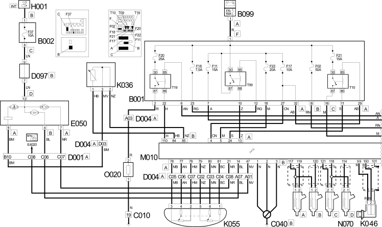
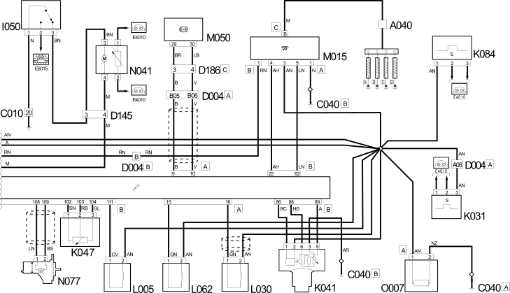

E5050 DIESEL ENGINE ELECTRONIC MANAGEMENT WIRING DIAGRAM
- Path
- Electrical equipment > 1 ELECTRICAL FUNCTIONS > E50 ENGINE CONTROL AND MANAGEMENT SYSTEMS > E5050 DIESEL ENGINES ELECTRONIC MANAGEMENT > E5050 DIESEL ENGINE ELECTRONIC MANAGEMENT WIRING DIAGRAM
- Kind
- topic
- Applies to
- engines: 2.0 JTD 8V; all production periods
- Interactive page
- https://sloeber94.github.io/elrnDB-fDct/en/#/244007308
Applies to: engines: 2.0 JTD 8V; all production periods
Wiring Diagram


Components
Component code | Description | Reference to the assembly |
|---|---|---|
HEATER PLUGS | 5520C | |
JUNCTION UNIT | 5,505A | |
JUNCTION UNIT UNDER DASHBOARD | - | |
MAXI FUSE BOX ON BATTERY | - | |
LEFT FRONT EARTH | - | |
ENGINE EARTH | - | |
FRONT/DASHBOARD COUPLING | - | |
FRONT/ENGINE COUPLING | - | |
SHORT CIRCUITING COUPLING | - | |
FRONT/CILC (FUEL LEVEL GAUGE CIRCUIT) COUPLING | - | |
FRONT/ABS COUPLING | - | |
INSTRUMENT PANEL | 5,560B | |
WATER IN DIESEL FILTER SENSOR | - | |
ENGINE COOLANT TEMPERATURE SENSOR/SENDER UNIT | - | |
AIR FLOW METER | - | |
RPM SENSOR | - | |
TIMING SENSOR | - | |
ACCELERATOR PEDAL POTENTIOMETER | - | |
SPEEDOMETER SENSOR | - | |
IGNITION SWITCH | ||
INERTIA SWITCH | ||
INJECTION PUMP THIRD PISTON DEACTIVATION SOLENOID VALVE | - | |
EGR SOLENOID VALVE | - | |
THROTTLE BODY SOLENOID VALVE | - | |
ENGINE MANAGEMENT ECU | - | |
PLUG PREHEATING CONTROL UNIT | - | |
ABS CONTROL UNIT | - | |
FUEL PUMP AND EPIC LEVEL GAUGE | 1,040A | |
INJECTOR | 1056B | |
FUEL PRESSURE REGULATOR | 1060E | |
PASSENGER COMPARTMENT ADDITIONAL FAN | - | |
OIL VAPOUR HEATING RESISTANCE | - | |
Diesel heating resistance | - |
Topics linked from this page (35)
- 1040A FUEL TANK AND COMPONENTS
- 5520A IGNITION SWITCH
- A040 HEATER PLUGS
- B001 JUNCTION UNIT
- B002 JUNCTION UNIT UNDER DASHBOARD
- B099 MAXI FUSE BOX ON BATTERY
- C010 LEFT FRONT EARTH
- C040 ENGINE EARTH
- D001 FRONT/DASHBOARD COUPLING
- D004 FRONT/ENGINE COUPLING
- D097 SHORT CIRCUITING COUPLING
- D145 FRONT/CILC (FUEL LEVEL GAUGE CIRCUIT) COUPLING
- D186 FRONT/ABS COUPLING
- E050 INSTRUMENT PANEL
- H001 IGNITION SWITCH
- I050 INERTIA SWITCH
- K031 WATER IN DIESEL FILTER SENSOR
- K036 ENGINE COOLANT TEMPERATURE SENSOR/SENDER UNIT
- K041 AIR FLOW METER
- K046 RPM SENSOR
- K047 TIMING SENSOR
- K055 ACCELERATOR PEDAL POTENTIOMETER
- K084 SPEEDOMETER SENSOR
- L005 INJECTION PUMP THIRD PISTON DEACTIVATION SOLENOID VALVE
- L030 EGR SOLENOID VALVE
- L062 THROTTLE BODY SOLENOID VALVE
- M010 ENGINE MANAGEMENT ECU
- M015 PLUG PREHEATING CONTROL UNIT
- M050 ABS CONTROL UNIT
- N041 FUEL PUMP AND EPIC LEVEL GAUGE
- N070 INJECTOR
- N077 FUEL PRESSURE REGULATOR
- N084 PASSENGER COMPARTMENT ADDITIONAL FAN
- O007 OIL VAPOUR HEATING RESISTANCE
- O020 Diesel heating resistance